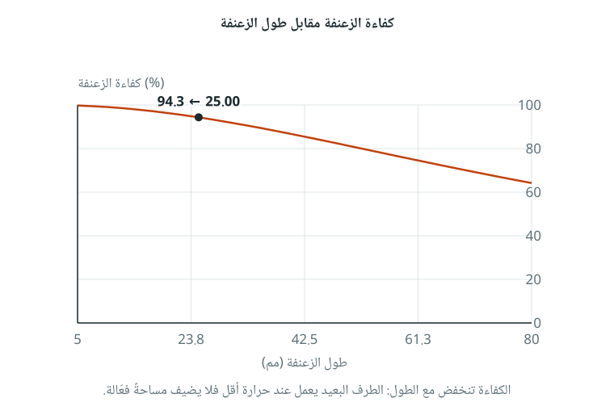

زعنفة أطول: كيف تتغير الكفاءة والقدرة؟
غيّر الطول والسمك ومعامل الحمل، وتابع mL والكفاءة والحرارة المنقولة على المقياس. محاكاة تعليمية لا قياس فيزيائي حقيقي.
المقياس يبدأ عند 25 مم و2 مم و60 واط/م²·ك. محاكاة تعليمية لا قياس فيزيائي حقيقي: الأرقام تُحسب من النموذج لحظيًا، ولا تُقاس بأدوات منزلية.
افتراضات النموذج والمصدر
η = tanh(mL)/(mL) حيث m = √(2h/(k·t))
زعنفة ألمنيوم بموصلية 205 W/(m·K) وعرض 0.2 م؛ تقريب صفيحة عريضة P/A≈2/t.
فرق حرارة ثابت 50 كلفن بين القاعدة والوسط.
طرف معزول ومعامل حمل منتظم؛ لا إشعاع ولا مقاومة اتصال.
الزعنفة تضيف مساحة للحمل الحراري، وتوصل الحرارة من قاعدتها إلى هذه المساحة. لكن مقاومة التوصيل تجعل الطرف أبرد من القاعدة، فينخفض الفرق الحراري الذي يدفع انتقال الحرارة من الطرف إلى الهواء.
الكفاءة تقارن قدرة الزعنفة الفعلية بقدرتها لو كانت مساحتها كلها عند حرارة القاعدة. لذلك يمكن أن تزيد القدرة الكلية بإطالة الزعنفة بينما تنخفض الكفاءة في الوقت نفسه. عند طول كبير تتناقص مساهمة كل زيادة جديدة لأن الطرف يقترب من حرارة الوسط.
غيّر الطول مع ثبات السمك ومعامل الحمل، ثم ثبّت الحالة للمقارنة. اقرأ الكفاءة والقدرة معًا. النموذج لزعنفة ألمنيوم مستقيمة رقيقة عريضة، بموصلية ثابتة وطرف معزول، ولا يحسب إشعاع السطح أو مقاومة اتصال القاعدة.
كيف تعمل الظاهرة؟
الحرارة تسير بالحمل إلى الهواء وبالتوصيل على طول المعدن؛ كلما زادت مقاومة التوصيل على طول الزعانفة هبطت حرارتها وهبط معها الفيض عند أطرافها، فتحمل الأطراف أقل مما تحمله القاعدة عند الفرق الحراري نفسه. مقاومة التوصيل تتناسب عكسيًّا مع الموصلية والسمك، ومقاومة الحمل عكسيًّا مع h.
العلاقة بالأرقام
المعادلة: η = tanh(mL)/(mL) حيث m = √(2h/(k·t)). عند طول الزعنفة 25.00 مم، سمكها 2.00 مم، معامل الحمل على سطحها 60.00 واط/م²·ك، يعطي الحساب: المعامل mL = 0.428 ؛ كفاءة الزعنفة = 94.3 %؛ معامل الحمل = 60 واط/م²·ك؛ الحرارة المنقولة = 28.3 واط. حالة «زعنفة قصيرة» (طول الزعنفة 10.00 مم، سمكها 2.00 مم، معامل الحمل على سطحها 60.00 واط/م²·ك): المعامل mL = 0.171 ؛ كفاءة الزعنفة = 99.0 %؛ معامل الحمل = 60 واط/م²·ك؛ الحرارة المنقولة = 11.9 واط. حالة «زعنفة أطول» (طول الزعنفة 70.00 مم، سمكها 2.00 مم، معامل الحمل على سطحها 60.00 واط/م²·ك): المعامل mL = 1.198 ؛ كفاءة الزعنفة = 69.6 %؛ معامل الحمل = 60 واط/م²·ك؛ الحرارة المنقولة = 58.4 واط. هذه أمثلة مولدة من دالة الحساب نفسها؛ وليست قياسات فعلية أو مواصفات لجهاز تجاري.
مفاهيم متقاربة
الكفاءة تقارن الحرارة الفعلية بما ينقله سطح الزعنفة لو بقي كله عند حرارة القاعدة، فتقع بين الصفر والواحد. أما الفاعلية فتقارن وجود الزعنفة بسطح القاعدة المكشوف الذي حلت محله. يمكن أن تقل الكفاءة مع الطول وتزداد القدرة، ولذلك يجب قراءة الكفاءة والقدرة والوزن معًا عند التصميم.
حدود التطبيق
المعادلة لزعنفة مستقيمة مقطعها ثابت بمعامل حمل منتظم وطرف معزول. الزعانف ذات الطرف غير المعزول تحتاج تعديلًا بسيطًا (استبدال L بـL+t/2). الزعانف المخروطية أو المغزلية أو المبرّدة بالتبخّر تحتاج حلًّا آخر، ولا تصلح عند وجود إشعاع مؤثر.

| الكمية | القيمة | المصدر |
|---|---|---|
| المعامل mL — الحالة الافتراضية | 0.428 بلا وحدة | [1] |
| كفاءة الزعنفة — الحالة الافتراضية | 94.3 % | [1] |
| معامل الحمل — الحالة الافتراضية | 60 واط/م²·ك | [1] |
| الحرارة المنقولة — الحالة الافتراضية | 28.3 واط | [1] |
المصادر
- 1 Heat Transfer From a Fin — Thermodynamics and Propulsion, §18.2 — Massachusetts Institute of Technology. web.mit.edu/16.unified/www/FALL/thermodynamics/notes/node128.html · اطُّلع عليه 2026-11-20
- 2 Thermal conductivity of metals — The Engineering ToolBox. www.engineeringtoolbox.com/thermal-conductivity-metals-d_858.html · اطُّلع عليه 2026-11-19
راجعه: عبدالله الهويدي — مراجعة في تطبيق انفراد · 2026-11-19 · آخر تحديث 2026-11-20
رجوع إلى المعمل